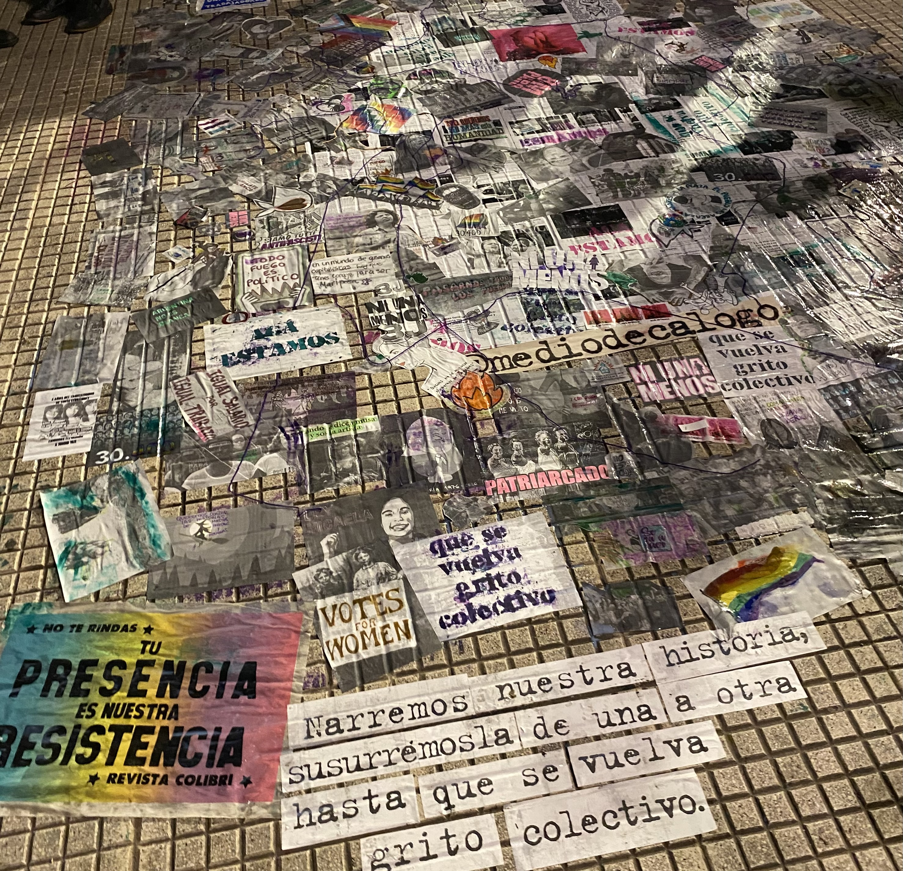

Sobre el proyecto
Mi nombre es Lara Trinidad Alonso y esta página presenta la propuesta de mi futura galería fotográfica.
La temática elegida es el grafiti y el arte callejero. La galería estará formada por fotografías propias de murales, grafitis e intervenciones artísticas encontradas en distintos espacios de la ciudad.
El objetivo es mostrar cómo el arte urbano forma parte del paisaje cotidiano y cómo transforma las paredes y espacios de la ciudad mediante colores, diseños y mensajes.
Arte urbano
